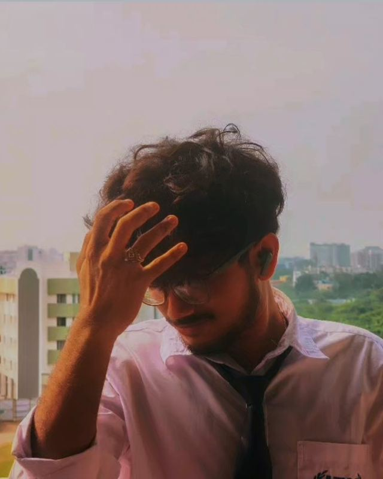

UI/UX DESIGNER IN THE MAKING · KOLKATA, INDIA
A little curiosity, a lot of iteration, and a belief that the details make the experience.
SCROLL TO EXPLORE ↓Point
Line
Shape
Motion
Everything begins as one position on a screen.
Move a point and it leaves a path behind.
Close the path and the path becomes a body.
Change the body over time and it feels alive.
Touch the grid.
Drag across it and the dots wake up. Tap to send a wave.
What you see.
Same distance. Different feeling.
Fast at first, soft at the end. It is how things arrive on a screen.
It goes a little too far, then settles back. This is where the playful feel comes from.
Constant speed. Nothing in nature moves like this, so it looks mechanical.
Jumps instead of glides, like a flip book.
It pulls back first, then launches. The pause tells you something is about to happen.
Three lines, drawn only as far as you have scrolled.
Slide
The page turns sideways while you keep scrolling down.
Stretch
Outlines change as shapes cross the screen.
Turn
Circles stay still. Everything around them does not.
Settle
Then it all comes to rest.
Open it up.
Every shape has a smaller one inside. Keep scrolling and the shells fade away.
Pull it apart.
Keep scrolling. The lines snap and every dot drifts away.
Same dots. New pattern.
The same points, now placed by the angle a sunflower uses for its seeds.
01 — SELECTED COLLABORATION
VoiceGuard
AI
A voice-controlled home automation concept, explored through the lens of interface design and user experience.
Your space, one voice away.
MY CONTRIBUTION
Making the interaction feel simple.
I’m part of a team developing VoiceGuard AI. My focus is the UI/UX side: thinking through the user journey, presenting device states clearly, and shaping an interface that feels approachable.
My role is limited to UI/UX design. AI, voice-processing, electronics and backend development are handled by other team members.

Designed with curiosity. Built with care. © 2026 Aritra Biswas